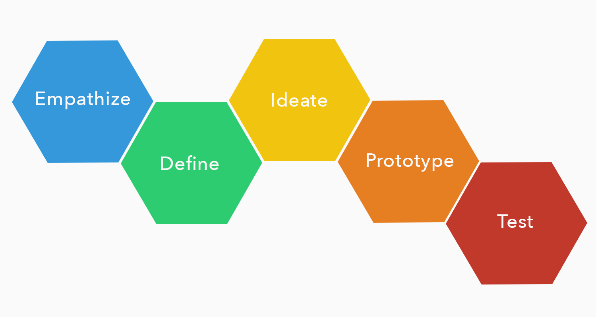

Eating healthy ain't easy
Eating healthy is a challenge for a lot of students. For many, it is difficult to make time for nutritious meals in between classes and work. For others, a limited budget might be keeping them from actively choosing healthy food. This food culture enables a student body that prioritizes speed and convenience over health and food quality.
As part of the HCDE 518 class, this project strives to gain a better understanding of the many barriers students face in making healthy food choices as they make their way around campus. Through various research methods, we want to learn the variety of behaviors that students exhibit towards healthy food options, and by doing so, our goal is to design an engaging solution that will help students access healthier, more informed, and wholesome food within the University of Washington vicinity.
Striving for "user-centricity"
Many of us came to the Product Design field not knowing exactly what it is. Some take it for a fancy way of terming Web Design, others generally define it as the bridge between Visual Design and Product Management. Taking this class has helped us clarify this doubt by laying out the basic foundation of Product Design. As such, it allows us to start the project with a guiding process:
User research
Albeit we knew that UW students were our target user group, we still needed to understand their needs, motivation, frustration, behavior, attitude etc. when it comes to food. Understanding the users' context, in this respect, was our first objective, and we relied on three different research methods to achieve it.
By utilizing a mix of quantitative and qualitative research methods, we were able to paint an in-depth picture of who our users were - demographically as well as behavior-wise. At the same time, it helped us recognize patterns regarding what the users were telling us versus how they actually act in reality. In a way, recognizing these patterns were crucial in navigating the complex network of factors that typically influence a student's decisions regarding food.
Affinity diagram
I have to say this was one of the best memories of our project. After reviewing all of our interview and observation notes, as well as the survey response summary, we got together and produced an Affinity Diagram as a group. Using sticky notes, each person posted on the board comments, patterns, and information we gathered from the researches. We then sorted them into groups based on intuitive relationships. The goal of this exercise was two-fold:
- Organize and Condense our large, messy dataset into high-level themes that can collectively describe our users' context (super important; main objective).
- Provide an early user flow as well as interaction design ideas based on the relationships presented between the themes (something to look out for; a bonus).
Personas
With a clearer view of our users and their characteristics, we were definitely a big step ahead. Not only were we able to better evaluate the original design question (and accordingly revise a path to tackle it), we could now utilize the data we had to create two personas:
Personally, I think personas are just simply awesome (check out my blog post on why I think personas are great). As much as we like to rely heavily on different forms of data and say that we're definitely building better experiences for our users, designing without a persona is like buying a birthday present for someone you've never met or had the chance to know. Personas help to truly "humanize" the collected research data, and serve as an effective reminder of the "user-centered-ness" of design.
Sketches, wireframes, and a user flow
Sketching was my favorite part of the entire project. With a pencil and a stack of paper, I'm always ready to let my creativity roam free (under certain guidelines, of course). Within our project, this is something that we decided to do together as a team in order to enhance the diversity of potential ideas created.
Sketches are also nice because they allowed us to quickly and cheaply come up with ideas without investing too much time and efforts into complex interactions. We were even able to conduct some early user tests to get a good sense of which design direction we should aim for.
Once a set of ideas were finalized, we then transformed these sketches into a set of wireframes with specific desired features. Below is a selected sample:
We also built an interactive prototype out of these wireframes. One can say that a fully flushed-out design is in the making.
Prototyping using Justinmind
A user flow also accompanied our design at this stage, as we had a clearer vision of what our potential end-to-end user journey would be.
Task analysis
An exercise which we frequently relied on as we began to design our solution is task analysis. In this respect, we broke down potential user journeys into single sections that focus on individual actions carried out to complete individual goals. With task analysis, we were able to better identify users' thought process and desired reactions towards each task flow segment.

Usability test
Using the "Think-Aloud Protocol" method, a usability test was conducted with a total of seven UW students. The test focused on the user’s ability to execute core product features. Usability test tasks were designed to assess the accessibility and understandability of the end-to-end user flow.
The tests taught us a big lesson about usability testing and why they are critically important in Product Design. On one hand, it revealed a range of usability issues that were commonly experienced across all of our participants. On the other hand, it sent us an alarming warning that we slightly distracted ourselves from the design question with our abundance of features. The app might have seemed cool from the elevator pitch, but does it truly solve the problem we originally set out to tackle? That was a tough question that forced us to go back to our design and reset.
Final hi-fi design
A design challenge, nonetheless, is always a design opportunity. The collected data from the usability tests allowed us to make significant changes to our wireframes, which were then transformed into high-fidelity designs with a proper color palette and iconography usage.
We also decided to call our app "Husky Yum" (I'll let you do the math).

Reflection
Like many others, I came to this class with various questions about the field. In this respect, the class has done more than just clarifying these assumptions. It has built a strong foundation for my future developmental path as a Product Designer - simply by laying out the basic principles of "User-centered Design", what it truly means to design for our users. Furthermore, it was a formidable opportunity to learn from others the best practices, methods, and tools that can help further my career within the field.
As such, there're a few things I probably would have done differently if I were to execute this project again:
- Work more on analyzing the discrepancies between what users say versus. what they do. Due to time constraints we weren't able to dig deep into these patterns and had to make a few assumptions along the way. A better grasp of their mechanism would have greatly aided us during the ideation stage.
- Widen the research pool of students on the UW campus (i.e. dorm dwellers, distance commuters). Researching with a larger size of users can only make the collected data stronger and more reliable. Again, the lack of time and resources was a challenge.
- Optimize and iterate more on paper prototypes. It's fast, inexpensive, insightful, and fun...so why not? (I dedicated one whole blog post to my love for personas, check it out!)
- Test, test, test! Conduct another round of usability test (or more, if we have time). As I've come to personally experience with Husky Yum, testing your product for usability issues can often reveal more than previously perceived.